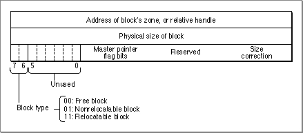

Legacy Document
Important: The information in this document is obsolete and should not be used for new development.
Important: The information in this document is obsolete and should not be used for new development.


Organization of Memory
This section describes the organization of heap zones and block headers. In general, you do not need to know how the Memory Manager organizes heap zones or block headers if your application simply allocates and releases blocks of memory. The information described in this section is used by the Memory Manager for its own purposes. Developers of some specialized applications and utilities might, however, need to know exactly how zones and block headers are organized. This information is also sometimes useful for debugging.
- WARNING
- This section is provided primarily for informational purposes. The organization and size of heap zones and block headers is subject to change in future system software versions.

Heap Zones
Except for temporary memory blocks, all relocatable and nonrelocatable blocks
exist within heap zones. A heap zone consists of a zone header, a zone trailer block,
and usable bytes in between. The header contains all of the information the
Memory Manager needs about that heap zone; the trailer is just a minimum-sized free block placed as a marker at the end of the zone.In Pascal, a heap zone is defined as a zone record of type
Zone. The zone record contains all of the fields of the zone header. A heap zone is always referred to with a zone pointer of data typeTHz.
- WARNING
- The fields of the zone header are for the Memory Manager's own internal use. You can examine the contents of the zone's fields, but in general it doesn't make sense for your application to try to change them. The only fields of the zone record that you can safely modify directly are the
moreMastandpurgeProcfields.TYPE Zone = RECORD bkLim: Ptr; {first usable byte after zone} purgePtr: Ptr; {used internally} hFstFree: Ptr; {first free master pointer} zcbFree: LongInt; {number of free bytes in zone} gzProc: ProcPtr; {grow-zone function} moreMast: Integer; {num. of master ptrs to allocate} flags: Integer; {used internally} cntRel: Integer; {reserved} maxRel: Integer; {reserved} cntNRel: Integer; {reserved} maxNRel: Integer; {reserved} cntEmpty: Integer; {reserved} cntHandles: Integer; {reserved} minCBFree: LongInt; {reserved} purgeProc: ProcPtr; {purge-warning procedure} sparePtr: Ptr; {used internally} allocPtr: Ptr; {used internally} heapData: Integer; {first usable byte in zone} END; THz = ^Zone; {zone pointer}The structure of a heap zone is the same in both 24-bit and 32-bit addressing modes. The use of several of the fields that are reserved or used internally, however, may differ in 24-bit and 32-bit heap zones.
Field Description
bkLim- A pointer to the byte following the last byte of usable space in
the zone.purgePtr- Used internally.
hFstFree- A pointer to the first free master pointer in the zone. All master pointers that are allocated but not currently in use are linked together into a list. The
hFstFreefield references the head node of this list. The Memory Manager updates this list every time it allocates a new relocatable block or releases one, so that the list contains all unused master pointers. If the Memory Manager needs a new master pointer but this field is set toNIL, it allocates a new nonrelocatable block of master pointers. You can check the value of this field to see whether allocating a relocatable block would cause a new block of master pointers to be allocated.zcbFree- The number of free bytes remaining in the zone. As blocks are allocated and released, the Memory Manager adjusts this field accordingly. You can use the
FreeMemfunction to determine the value of this field for the current heap zone.gzProc- A pointer to a grow-zone function that system software uses to maintain control over the heap. The system's grow-zone function subsequently calls the grow-zone function you specify for your heap, if any. You can change a heap zone's grow-zone function at any time but should do so only by calling the
InitZoneorSetGrowZoneprocedures. Note that in current versions of system software, this field does not contain a pointer to the grow-zone function that your application defines.moreMast- The number of master pointers the Memory Manager should allocate at a time. The Memory Manager allocates this many automatically when a heap zone is initialized. By default, master pointers are allocated 32 at a time for the system heap zone and 64 at a time for the application heap zone, but this might change in future versions of system software.
flags- Used internally.
cntRel- Reserved.
maxRel- Reserved.
cntNRel- Reserved.
maxNRel- Reserved.
cntEmpty- Reserved.
cntHandles- Reserved.
minCBFree- Reserved.
purgeProc- A pointer to the zone's purge-warning procedure, or
NILif there is none. The Memory Manager calls this procedure before it purges a block from the zone. Note that whenever you call the Resource Manager procedureSetResPurgewith the parameter set toTRUE, the Resource Manager installs its own purge-warning procedure, overriding any purge-warning procedure you have specified here.sparePtr- Used internally.
allocPtr- Used internally.
heapData- A dummy field marking the beginning of the zone's usable
memory space. The integer in this field has no significance in
itself; it is just the first 2 bytes in the block header of the first
block in the zone. For example, ifmyZoneis a zone pointer, then@(myZone^.heapData)is the address of the first usable byte in the zone, andmyZone^.bkLimis a pointer to the byte following the last usable byte in the zone.Block Headers
Every block in a heap zone, whether allocated or free, has a block header that the Memory Manager uses to find its way around in the zone. Block headers are completely transparent to your application. All pointers and handles to allocated blocks reference the beginning of the block's logical contents, following the end of the header. Similarly, whenever you use a variable of typeSize, that variable refers to the number of bytes in the block's logical contents, not including the block header. That size is known as the block's logical size, as opposed to its physical size, the number of bytes it actually occupies in memory, including the header and any unused bytes at the end of the block.There are two reasons that a block might contain such unused bytes:
There is no Pascal record type defining the structure of block headers because you shouldn't normally need to access them directly. In addition, the structure of a block header depends on whether the block is located in a 24-bit or 32-bit zone.
- The Memory Manager allocates space only in even numbers of bytes. (This practice guarantees that both the contents and the address of a master pointer are even.)
If a block's logical size is odd, an extra, unused byte is added at the end to make the physical size an even number. On computers containing the MC68020, MC68030,
or MC68040 microprocessor, blocks are padded to 4-byte boundaries.- The minimum number of bytes in a block is 12. This minimum applies to all
blocks, free as well as allocated. If allocating the required number of bytes from a
free block would leave a fragment of fewer than 12 free bytes, the leftover bytes are included unused at the end of the newly allocated block instead of being returned to free storage.
In a 24-bit zone, a block header consists of 8 bytes, which together make up two long words, as shown in Figure 2-1.
Figure 2-1 A block header in a 24-bit zone
In the first long word, the low-order 3 bytes contain the block's physical size in bytes. Adding this number to the block's address gives the address of the next block in the zone. The first byte of the block header is a tag byte that provides other information on the block. The bits in the tag byte have these meanings:
Bit Meaning 0-3 The block's size correction 4-5 Reserved 6-7 The block type In the tag byte, the high-order 2 bits determine whether a block is free (binary 00), relocatable (binary 10), or nonrelocatable (binary 01). The low-order 4 bits contain a block's size correction, the number of unused bytes at the end of the block, beyond the end of the block's contents. This correction is equal to the difference between the block's logical and physical sizes, excluding the 8 bytes of overhead for the block header, as in the following formula:
physicalSize = logicalSize + sizeCorrection + 8The contents of the second long word (4 bytes) in the 24-bit block header depend on the type of block. For relocatable blocks, the second long word contains the block's relative handle: a pointer to the block's master pointer, expressed as an offset relative to the start of the heap zone rather than as an absolute memory address. Adding the relative handle to the zone pointer produces a true handle for this block. For nonrelocatable blocks, the second long word of the header is just a pointer to the block's zone. For free blocks, the contents of these 4 bytes are undefined.In a 32-bit zone, a block header consists of 12 bytes, which together make up three long words, as shown in Figure 2-2.
Figure 2-2 A block header in a 32-bit zone
 The first byte of the block header is a tag byte that indicates the type of the block. The bits in the tag byte have these meanings:
Bit Meaning 0-5 Reserved 6-7 The block type In the tag byte, the high-order 2 bits determine whether a block is free (binary 00), relocatable (binary 10), or nonrelocatable (binary 01).
The second byte in the block header contains the master pointer flag bits, if the block is a relocatable block. Otherwise, this byte is undefined. The bits in this byte have these meanings:
Bit Meaning 0-4 Reserved 5 If set, block contains resource data 6 If set, block is purgeable 7 If set, block is locked The low-order byte of the high-order long word contains the block's size correction. This correction is equal to the difference between the block's logical and physical sizes, excluding the 12 bytes of overhead for the block header, as follows:
physicalSize = logicalSize + sizeCorrection + 12The second long word in the 32-bit block header contains the block's physical size, and the third long word contains the block's relative handle. These fields have the same meaning as the corresponding fields in the 24-bit block header.